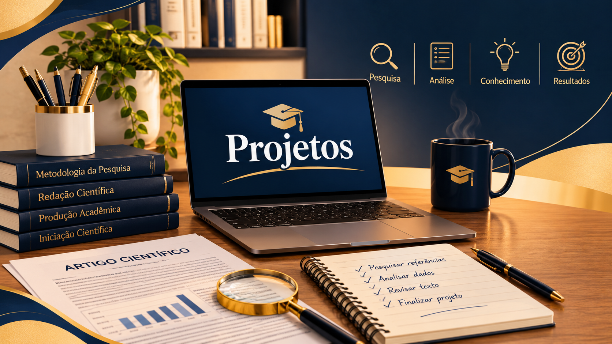
Pesquisa e Projetos Acadêmicos (Graduação)
- Pré-Projeto de Pesquisa
- Projeto de Pesquisa
- TCC I (Projeto de Pesquisa)
- TCC II (Desenvolvimento da Pesquisa)
Para estudantes, professores e pesquisadores: orientação do projeto à defesa, com clareza, método e responsabilidade.
A EO Consultoria Acadêmica é voltada a estudantes de graduação, pós-graduação lato sensu ou stricto sensu, pesquisadores(as) e professores(as) que buscam apoio acadêmico com método, clareza e responsabilidade.
Apoio em pesquisa, escrita, revisão, ABNT e apresentação. O formato do acompanhamento considera a etapa, o objetivo e o prazo de cada trabalho.

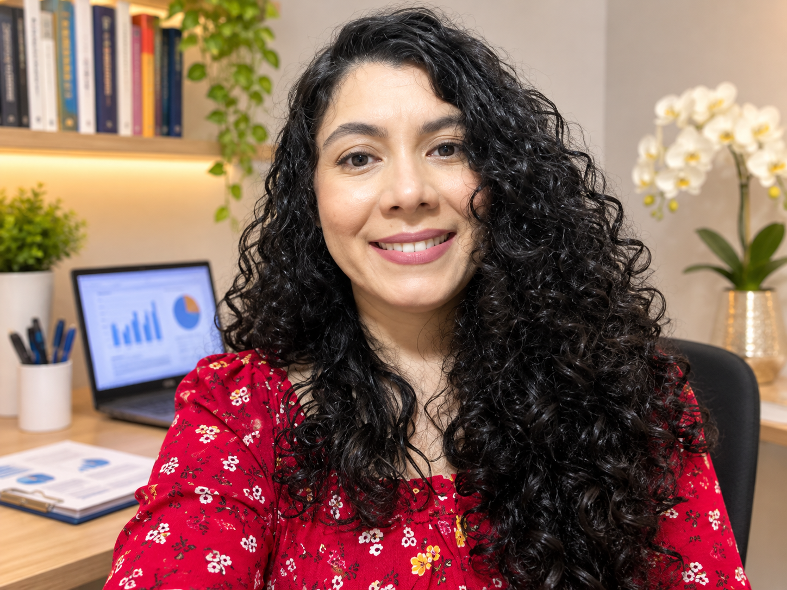
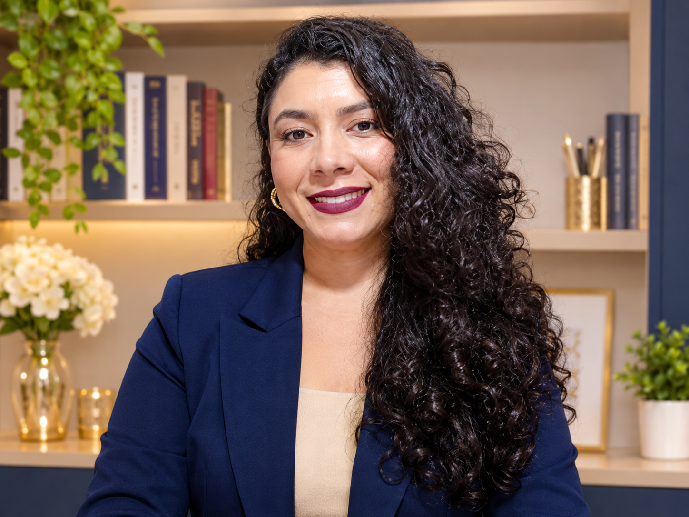
Conversar sobre este serviço →No primeiro contato, entendemos seu curso, etapa, tipo de trabalho, objetivo, prazo e principais dificuldades para indicar caminhos de apoio.
Com essas informações, alinhamos quais orientações, revisões ou encontros podem contribuir para a sua etapa.
Você recebe orientação sobre estrutura, método, linguagem acadêmica e apresentação, mantendo a autoria e as decisões acadêmicas do seu trabalho.
O acompanhamento considera coerência, estrutura, organização textual e método para ajudar você a avançar com mais clareza.
A orientação considera seu ponto de partida, seus objetivos e as dificuldades que aparecem em cada etapa.
O apoio respeita o processo de aprendizagem e a autoria do estudante, com responsabilidade acadêmica em todas as etapas.
Relatos de estudantes e profissionais que compartilharam como foi o acompanhamento acadêmico.
“Com a orientação da Elayne, consegui organizar meu processo de escrita de forma clara e objetiva.”Prof. Evenilson
“Ganhei 10! Você é uma excelente profissional.”Darly, estudante
“Ajudou demais, obrigada!”Josiane Cunha
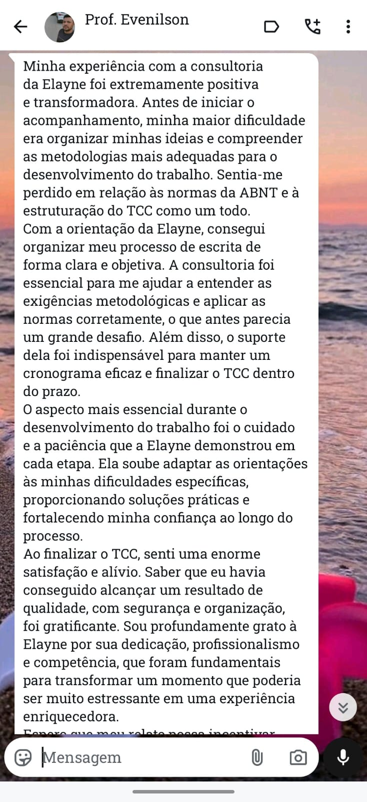
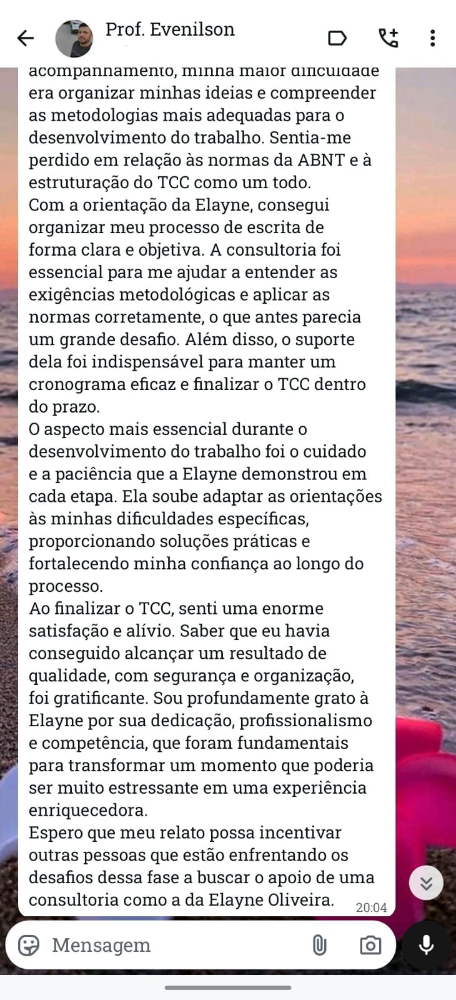
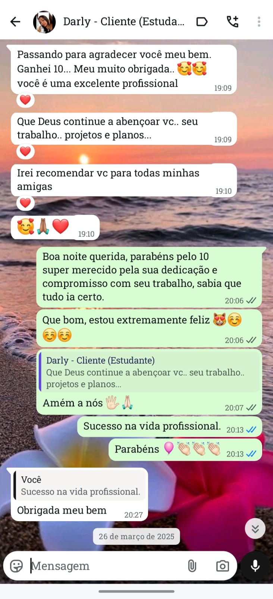
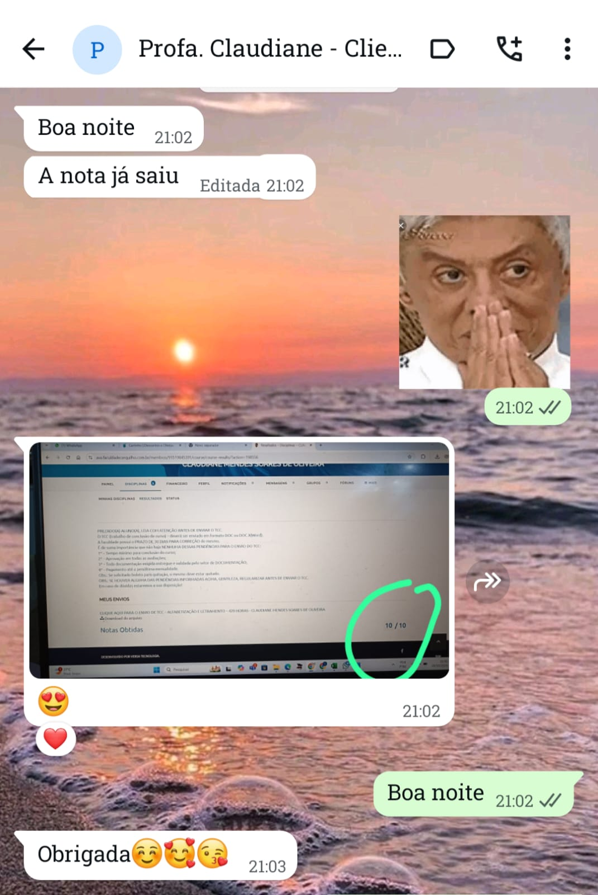
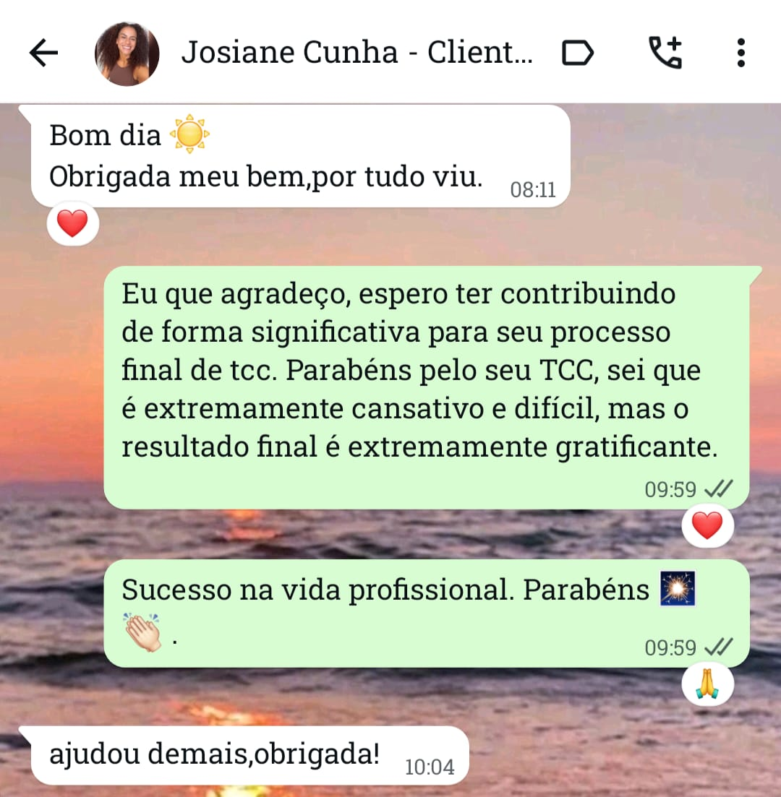
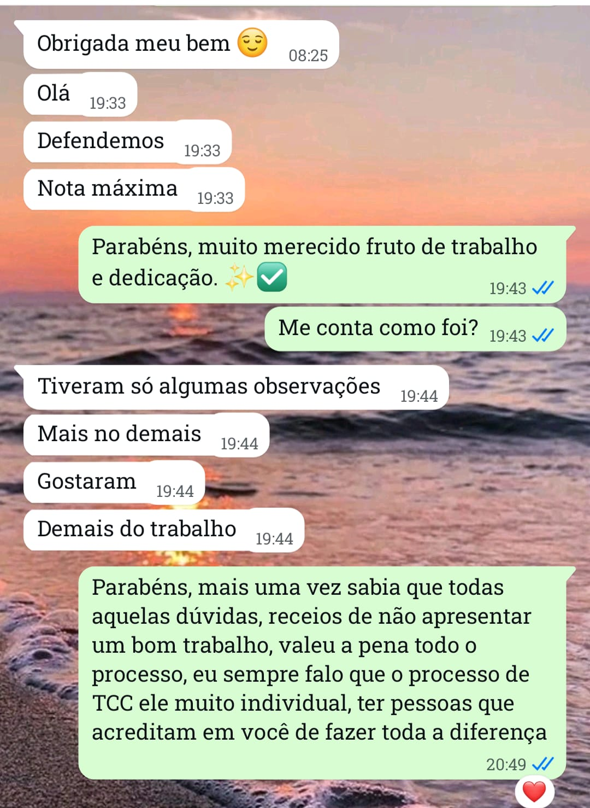
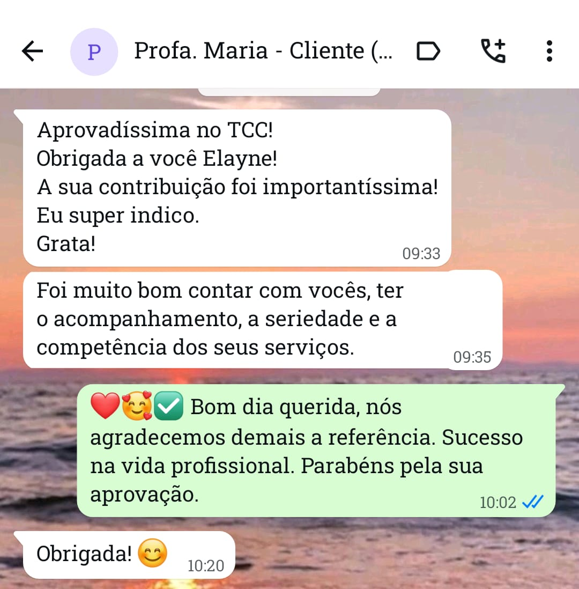
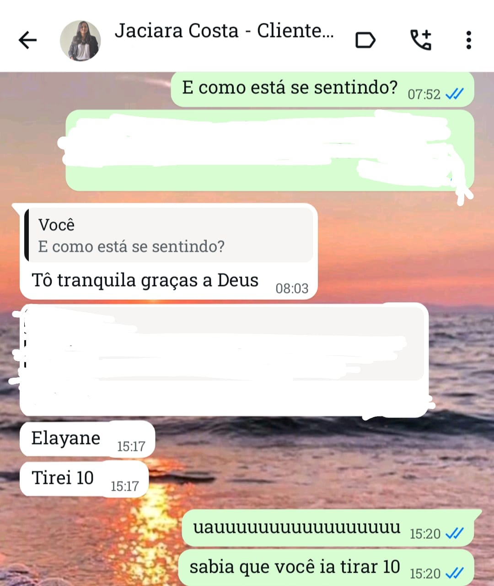
“São mais do que resultados. São reflexos da diferença que, como consultora, busco fazer na trajetória acadêmica de cada estudante. Mais do que pensar apenas na conclusão do trabalho, acredito na importância de aprender, evoluir e crescer durante todo o processo de escrita. Afinal, cada etapa acadêmica representa uma fase única da vida, marcada por desafios, emoções, descobertas e conquistas que fazem parte da construção pessoal e profissional de cada aluno.”
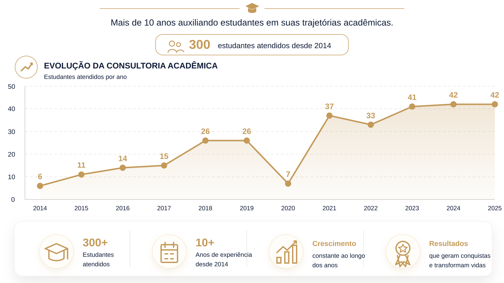
“A EO Consultoria Acadêmica, ao longo desses anos, construiu muito mais do que resultados: construiu histórias, memórias e conquistas acadêmicas ao lado de estudantes que confiaram no meu trabalho. É emocionante fazer parte da trajetória e do crescimento de cada aluno.”
Estudantes de graduação e pós-graduação, professores e pesquisadores que precisam de orientação, revisão ou apoio metodológico.
Sim. O contato pode acontecer por mensagem e, quando necessário, por reuniões online, inclusive no Google Meet.
O apoio pode envolver orientação metodológica, revisão, normalização ABNT, organização de apresentações e outros serviços listados nesta página. A autoria e as decisões acadêmicas permanecem com o estudante.
Envie seu curso, tipo e etapa do trabalho, além do prazo desejado. Com essas informações, a consultoria pode orientar sobre o formato de atendimento, prazos possíveis, disponibilidade e valores.
Para iniciar a conversa, envie seu curso, o tipo e a etapa do trabalho e o prazo que você tem em mente. Assim fica mais fácil entender sua necessidade e orientar os próximos passos.